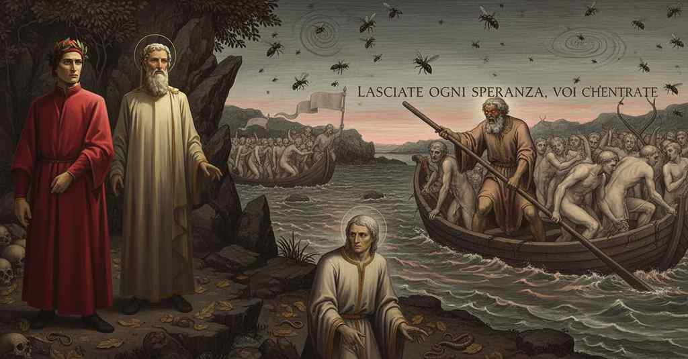

Inferno — Canto 3

Dante e Virgilio entrano nell'Inferno, dove vedono gli ignavi tormentati, incontrano Caronte che traghetta le anime dannate sull'Acheronte, e Dante sviene mentre la terra trema. Dante and Virgil enter Hell, where they see the tormented neutrals, meet Charon ferrying the damned souls across Acheron, and Dante faints as the earth trembles. ダンテとウェルギリウスは地獄に入り、そこで苦しめられる中立者たちを見て、断罪された魂をアケロン川の向こうへ渡すカロンに出会い、大地が震える中でダンテは気を失う。
1
‘Per me si va ne la città dolente,
‘Through me one goes into the sorrowful city,
「我を過ぎて行くは嘆きの都、
2
per me si va ne l’etterno dolore,
through me one goes into eternal sorrow,
我を過ぎて行くは永遠の苦悩、
3
per me si va tra la perduta gente.
through me one goes among the lost people.
我を過ぎて行くは滅びし民の中。
4
Giustizia mosse il mio alto fattore;
Justice moved my high maker;
正義は我が至高の創り主を動かし、
5
fecemi la divina podestate,
the divine power made me,
我を造りしは神の権能、
6
la somma sapïenza e ’l primo amore.
the supreme wisdom and the primal love.
至高の知恵と原初の愛。
7
Dinanzi a me non fuor cose create
Before me there were no created things
我が前に創られしものはなく、
8
se non etterne, e io etterno duro.
if not eternal, and I eternal last.
永遠なるものを除きて。そして我は永遠に続く。
9
Lasciate ogne speranza, voi ch’intrate’.
Abandon all hope, you who enter.’
ここに入る汝ら、一切の望みを捨てよ」。
10
Queste parole di colore oscuro
These words of obscure color
これら暗い色の言葉が、
11
vid’ ïo scritte al sommo d’una porta;
I saw written at the top of a gate;
ある門の頂に記されているのを私は見た。
12
per ch’io: «Maestro, il senso lor m’è duro».
wherefore I: “Master, their meaning is hard for me.”
ゆえに私は言った。「師よ、その意味は私には難解です」。
13
Ed elli a me, come persona accorta:
And he to me, like a discerning person:
すると彼は、慧眼の人として私に言った。
14
«Qui si convien lasciare ogne sospetto;
“Here one must leave behind all hesitation;
「ここでは一切の疑いを捨てねばならぬ。
15
ogne viltà convien che qui sia morta.
all cowardice must here be dead.
一切の卑劣さも、ここでは死に絶えねばならぬ。
16
Noi siam venuti al loco ov’ i’ t’ho detto
We have come to the place where I told you
我らは私が汝に語った場所に来たのだ、
17
che tu vedrai le genti dolorose
that you will see the sorrowful people
汝が嘆き苦しむ人々を見るであろうと。
18
c’hanno perduto il ben de l’intelletto».
who have lost the good of the intellect.”
彼らは知性の善を失ったのだ」。
19
E poi che la sua mano a la mia puose
And after he placed his hand on mine
そして彼がその手を私の手に置くと、
20
con lieto volto, ond’ io mi confortai,
with a cheerful face, from which I took comfort,
晴れやかな顔で、それゆえ私は慰められ、
21
mi mise dentro a le segrete cose.
he led me within to the secret things.
私を秘密の事柄の中へと導き入れた。
22
Quivi sospiri, pianti e alti guai
Here sighs, weeping, and loud wails
ここでは、溜息と、嘆きと、高い呻き声が
23
risonavan per l’aere sanza stelle,
resounded through the starless air,
星なき大空に響き渡り、
24
per ch’io al cominciar ne lagrimai.
so that at the beginning I wept for it.
それゆえ、初めから私は涙を流した。
25
Diverse lingue, orribili favelle,
Diverse tongues, horrible speeches,
様々な国の言葉、恐ろしい方言、
26
parole di dolore, accenti d’ira,
words of sorrow, accents of anger,
苦しみの言葉、怒りの声、
27
voci alte e fioche, e suon di man con elle
voices high and hoarse, and with them the sound of hands
高い声と低い声、そしてそれに混じる手を打つ音が
28
facevano un tumulto, il qual s’aggira
made a tumult, which whirls
騒ぎをなし、それは渦巻いていた
29
sempre in quell’ aura sanza tempo tinta,
forever in that timelessly tinted air,
時なき色を帯びたその大気の中に常に、
30
come la rena quando turbo spira.
like the sand when a whirlwind blows.
旋風が砂を吹き上げるときのように。
31
E io ch’avea d’error la testa cinta,
And I, who had my head girt with error,
そして、頭に迷いをまとっていた私は、
32
dissi: «Maestro, che è quel ch’i’ odo?
said: 'Master, what is that which I hear?
言った。「師よ、私が聞いているのは何ですか？
33
e che gent’ è che par nel duol sì vinta?».
and who are these people who seem so vanquished by pain?'
そして、かくも苦しみに打ち負かされているように見えるのは、何者ですか？」と。
34
Ed elli a me: «Questo misero modo
And he to me: 'This miserable state
すると彼は私に言った。「この惨めな有り様は、
35
tegnon l’anime triste di coloro
is kept by the sad souls of those
あの者たちの悲しい魂が保っているのだ、
36
che visser sanza ’nfamia e sanza lodo.
who lived without infamy and without praise.
汚名もなく、賞賛もなく生きた者たちの。
37
Mischiate sono a quel cattivo coro
Mingled are they with that wicked choir
彼らは、あの卑しい一団と混じり合っている、
38
de li angeli che non furon ribelli
of the angels who were not rebellious
神に背きもせず、
39
né fur fedeli a Dio, ma per sé fuoro.
nor were faithful to God, but were for themselves.
神に忠実でもなく、ただ自らのためにのみあった天使たちの。
40
Caccianli i ciel per non esser men belli,
The heavens chase them out, not to be less beautiful,
天は、その美しさを損なわぬために彼らを追い出し、
41
né lo profondo inferno li riceve,
nor does deep hell receive them,
深き地獄も彼らを受け入れぬ、
42
ch’alcuna gloria i rei avrebber d’elli».
for the damned would have some glory from them.'
さもなくば罪人どもが彼らから何らかの栄誉を得るであろうから」。
43
E io: «Maestro, che è tanto greve
And I: 'Master, what is so grievous
そして私は言った。「師よ、何が彼らにとってかくも重く、
44
a lor che lamentar li fa sì forte?».
to them that makes them lament so loudly?'
あれほど激しく嘆かせているのですか？」と。
45
Rispuose: «Dicerolti molto breve.
He answered: 'I will tell you very briefly.
彼は答えた。「ごく手短に話そう。
46
Questi non hanno speranza di morte,
These have no hope of death,
この者たちは死の望みを持たず、
47
e la lor cieca vita è tanto bassa,
and their blind life is so abject,
そして彼らの盲目な生はかくも卑しく、
48
che ’nvidïosi son d’ogne altra sorte.
that they are envious of every other fate.
あらゆる他の運命を羨んでいるのだ。
49
Fama di loro il mondo esser non lassa;
Fame of them the world does not permit to exist;
世は彼らの評判が残ることを許さず、
50
misericordia e giustizia li sdegna:
mercy and justice scorn them:
慈悲も正義も彼らを軽蔑する。
51
non ragioniam di lor, ma guarda e passa».
let us not speak of them, but look and pass.'
彼らのことは語るな、ただ見て過ぎよ」。
52
E io, che riguardai, vidi una ’nsegna
And I, who looked again, saw a banner
そして私は、目を凝らして見ると、一つの旗が
53
che girando correva tanto ratta,
which, whirling, ran so fast,
回転しながら非常に速く走っており、
54
che d’ogne posa mi parea indegna;
that it seemed to me unworthy of any rest;
いかなる休息にも値しないかと見えた。
55
e dietro le venìa sì lunga tratta
and behind it came so long a train
そしてその背後には、かくも長い列が続いていた、
56
di gente, ch’i’ non averei creduto
of people, that I would not have believed
人々の列が、私は信じなかっただろう、
57
che morte tanta n’avesse disfatta.
that death had undone so many.
死がそれほど多くの者を滅ぼしたとは。
58
Poscia ch’io v’ebbi alcun riconosciuto,
After I had recognized some among them,
その中に誰かを見分けてから、
59
vidi e conobbi l’ombra di colui
I saw and knew the shade of him
私は見た、そして知った、あの者の影を、
60
che fece per viltade il gran rifiuto.
who made through cowardice the great refusal.
卑劣さゆえに、大いなる拒否をした者の。
61
Incontanente intesi e certo fui
At once I understood and was certain
たちどころに私は理解し、確信した、
62
che questa era la setta d’i cattivi,
that this was the sect of the wretches,
これが卑しい者どもの宗派であり、
63
a Dio spiacenti e a’ nemici sui.
displeasing to God and to His enemies.
神にも、神の敵にも嫌われた者たちの宗派であると。
64
Questi sciaurati, che mai non fur vivi,
These unfortunate ones, who never were alive,
この哀れな者ども、かつて真に生きたことのない者たちは、
65
erano ignudi e stimolati molto
were naked and much goaded
裸で、ひどく刺されていた、
66
da mosconi e da vespe ch’eran ivi.
by hornets and by wasps that were there.
そこにいる虻や蜂に。
67
Elle rigavan lor di sangue il volto,
These streaked their faces with blood,
それらが彼らの顔を血で濡らし、
68
che, mischiato di lagrime, a’ lor piedi
which, mixed with tears, at their feet
その血は涙と混じり、彼らの足元で
69
da fastidiosi vermi era ricolto.
was collected by loathsome worms.
忌まわしい蛆虫によって集められていた。
70
E poi ch’a riguardar oltre mi diedi,
And when I set myself to look beyond,
そして私がさらに先を見ようと目を向けると、
71
vidi genti a la riva d’un gran fiume;
I saw people on the bank of a great river;
わたしは見た、大いなる河の岸にいる人々を。
72
per ch’io dissi: «Maestro, or mi concedi
for which I said: “Master, now grant me
それゆえにわたしは言った、「師よ、今お許しください
73
ch’i’ sappia quali sono, e qual costume
that I may know who they are, and what custom
彼らが誰であるか、そしていかなる習性が
74
le fa di trapassar parer sì pronte,
makes them seem so eager to cross over,
彼らを渡ろうと、かくも急がせているのかを知ることを、
75
com’ i’ discerno per lo fioco lume».
as I discern through the dim light.”
この薄暗い光の中でわたしが見分けるように」。
76
Ed elli a me: «Le cose ti fier conte
And he to me: “These things will be made known to you
すると彼はわたしに、「そのことはお前に告げられるだろう
77
quando noi fermerem li nostri passi
when we have stopped our steps
我々が歩みを止めるときに
78
su la trista riviera d’Acheronte».
on the sad shore of Acheron.”
アケロンの悲しき川岸に」。
79
Allor con li occhi vergognosi e bassi,
Then with my eyes ashamed and lowered,
そこでわたしは、恥じらいと伏し目がちに、
80
temendo no ’l mio dir li fosse grave,
fearing my words might have been displeasing to him,
わたしの言葉が彼を煩わせたかと恐れ、
81
infino al fiume del parlar mi trassi.
I refrained from speech until the river.
川に着くまで、話すことを控えた。
82
Ed ecco verso noi venir per nave
And behold, coming toward us in a boat
と、見よ、我々に向かって舟でやって来るのが
83
un vecchio, bianco per antico pelo,
an old man, white with ancient hair,
一人の老人、古びた毛で白く、
84
gridando: «Guai a voi, anime prave!
shouting: “Woe to you, depraved souls!
叫びながら、「汝らに災いあれ、邪悪な魂どもよ！
85
Non isperate mai veder lo cielo:
Never hope to see the sky:
決して天を仰ぐ望みを持つな。
86
i’ vegno per menarvi a l’altra riva
I come to lead you to the other shore,
わたしは汝らを対岸へ連れて行くために来たのだ
87
ne le tenebre etterne, in caldo e ’n gelo.
into eternal darkness, in heat and in ice.
永遠の闇の中へ、熱と氷の中へ。
88
E tu che se’ costì, anima viva,
And you who are there, living soul,
そしてそこにいるお前、生きている魂よ、
89
pàrtiti da cotesti che son morti».
separate yourself from these who are dead.”
死んでいる者どもから離れよ」。
90
Ma poi che vide ch’io non mi partiva,
But when he saw that I did not depart,
しかしわたしが立ち去らないのを見て、
91
disse: «Per altra via, per altri porti
he said: “By another way, by other ports
彼は言った、「別の道、別の港から
92
verrai a piaggia, non qui, per passare:
you will come to the shore, not here, for your passage:
お前は岸に着くだろう、ここから渡るのではない。
93
più lieve legno convien che ti porti».
a lighter vessel it behooves to carry you.”
もっと軽い舟がお前を運ぶべきなのだ」。
94
E ’l duca lui: «Caron, non ti crucciare:
And my leader to him: “Charon, do not be vexed:
すると導き手は彼に、「カロンよ、苛立つな。
95
vuolsi così colà dove si puote
it is so willed there where what is willed can be done,
望むことが成されるかの地にて、かく望まれているのだ
96
ciò che si vuole, e più non dimandare».
and ask no more.”
望むことが。そしてこれ以上問うな」。
97
Quinci fuor quete le lanose gote
At this the woolly cheeks were quieted
そこで静まった、毛むくじゃらの頬は
98
al nocchier de la livida palude,
of the ferryman of the livid marsh,
青ざめた沼地の渡し守の、
99
che ’ntorno a li occhi avea di fiamme rote.
who around his eyes had wheels of flame.
目の周りに炎の輪を持つ者の。
100
Ma quell’ anime, ch’eran lasse e nude,
But those souls, who were weary and naked,
しかし、あの魂たちは、疲れ果て裸で、
101
cangiar colore e dibattero i denti,
changed color and chattered their teeth,
顔色を変え、歯を打ち鳴らした、
102
ratto che ’nteser le parole crude.
as soon as they heard the harsh words.
その残酷な言葉を聞くやいなや。
103
Bestemmiavano Dio e lor parenti,
They blasphemed God and their parents,
神と自らの親を呪い、
104
l’umana spezie e ’l loco e ’l tempo e ’l seme
the human species and the place and the time and the seed
人類と、場所と、時と、種とを、
105
di lor semenza e di lor nascimenti.
of their sowing and of their births.
その血筋の、そしてその誕生の。
106
Poi si ritrasser tutte quante insieme,
Then they all drew back together,
それから彼らは皆こぞって引き下がり、
107
forte piangendo, a la riva malvagia
weeping loudly, to the wicked shore
激しく泣きながら、かの忌まわしい岸辺へと、
108
ch’attende ciascun uom che Dio non teme.
that awaits every man who does not fear God.
神を畏れぬ者すべてを待ち受ける。
109
Caron dimonio, con occhi di bragia
Charon the demon, with eyes of burning coal,
鬼カロンは、燃える炭のような眼で
110
loro accennando, tutte le raccoglie;
gesturing to them, gathers them all;
彼らに合図を送り、一人残らず集め、
111
batte col remo qualunque s’adagia.
he strikes with his oar whichever one lingers.
ぐずぐずする者は誰であろうと櫂で打ち据える。
112
Come d’autunno si levan le foglie
As in autumn the leaves lift off
秋に木の葉が舞い落ちるように、
113
l’una appresso de l’altra, fin che ’l ramo
one after another, until the branch
次から次へと、ついに枝が
114
vede a la terra tutte le sue spoglie,
sees on the earth all its spoils,
地上に自らの衣をすべて見るまで、
115
similemente il mal seme d’Adamo
so the evil seed of Adam
同じように、アダムの悪しき末裔は
116
gittansi di quel lito ad una ad una,
cast themselves from that shore one by one,
その岸から一人また一人と身を投げる、
117
per cenni come augel per suo richiamo.
at his signs like a bird to its call.
呼び声に応じる鳥のように、合図によって。
118
Così sen vanno su per l’onda bruna,
Thus they go away over the dark wave,
かくして彼らは暗い波の上を去って行き、
119
e avanti che sien di là discese,
and before they have disembarked on the other side,
そして彼らが対岸に降り立つ前に、
120
anche di qua nuova schiera s’auna.
already on this side a new troop gathers.
すでにこちら側には新たな群れが集う。
121
«Figliuol mio», disse ’l maestro cortese,
"My son," said the courteous master,
「我が子よ」と礼節ある師は言った、
122
«quelli che muoion ne l’ira di Dio
"those who die in the wrath of God
「神の怒りのうちに死ぬ者たちは
123
tutti convegnon qui d’ogne paese;
all convene here from every country;
皆あらゆる国からここに集まるのだ。
124
e pronti sono a trapassar lo rio,
and they are ready to cross the river,
そして彼らは川を渡ることを望んでいる、
125
ché la divina giustizia li sprona,
for divine justice spurs them on,
なぜなら神の正義が彼らを駆り立て、
126
sì che la tema si volve in disio.
so that fear is turned into desire.
そのため恐怖が欲望へと変わるのだ。
127
Quinci non passa mai anima buona;
From here no good soul ever passes;
ここを善き魂が渡ることは決してない。
128
e però, se Caron di te si lagna,
and therefore, if Charon complains of you,
それゆえ、もしカロンがお前のことで不平を言うなら、
129
ben puoi sapere omai che ’l suo dir suona».
you can well know now what his speech means."
今や彼の言葉が何を意味するかよく分かるだろう」。
130
Finito questo, la buia campagna
This being finished, the dark plain
これが終わると、暗い大地は
131
tremò sì forte, che de lo spavento
trembled so strongly, that from the terror
非常に激しく震え、その恐怖の記憶は
132
la mente di sudore ancor mi bagna.
the memory still bathes me in sweat.
今なお私の心を汗で濡らす。
133
La terra lagrimosa diede vento,
The tear-soaked earth gave forth a wind,
涙に濡れた大地は風を生み、
134
che balenò una luce vermiglia
which flashed a reddish light
そこから真紅の光が閃いて、
135
la qual mi vinse ciascun sentimento;
that overcame my every sense;
それは私のあらゆる感覚を打ち負かした。
136
e caddi come l’uom cui sonno piglia.
and I fell like a man whom sleep seizes.
そして私は眠りに捉えられた人のように倒れた。